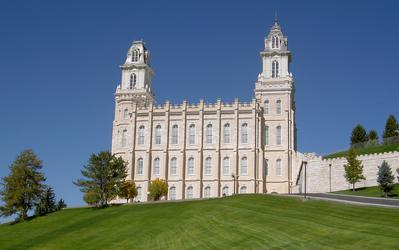
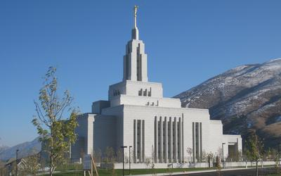

Temple Name: Manti Utah
Location: Manti, Utah, United States
Dedication: 21 May, 1888
Area: 74792
Description: The Manti Temple was one of the first (if not first) temples to be built in Utah. It was reconstructed for the purpose of sustaining its life much more for future generation to come.
Temple Name: Jordan River Utah
Location: South Jordan, Utah, United States
Dedication: 20 November, 1981
Area: 148236

Description: I love this temple because of how much I've been going there recently. My friends and I try to go as often together so that we can share our experiences anc also catch up on what we've been doing.
Temple Name: Payson Utah
Location: Payson, Utah, United States
Dedication: 7 June, 2015
Area: 96630

Description: During my mission my cousin go married in this temple. Seeing the beauty indie was remarkable, the sealing rook that day was shining with the rising sun and the glass stain windows were very beautiful that day.
Temple Name: St. George Utah
Location: St. George, Utah, United States
Dedication: 8 April, 1877
Area: 143969

Description: This temple was recently reconstructed and it is beautiful. During the time when Brigham Young was the prophet, this was one of the places where the leaders of the church would meet and find inspiration from God.
Temple Name: Salt Lake City
Location: Salt lake City, Utah, United States
Dedication: 1983, april, 6
Area: 250000

Description: The Salt Lake temple holds dear with my family, for many generations we have had our marriages done in this temple with the most recent one being my parents 24 years ago.
Temple Name: Draper Utah
Location: Draper, Utah, United States
Dedication: 20 March, 2009
Area: 58300
Description: The Draper Temple is one of the 5 temples in the Salt Lake Valley, I love how the baptism font is shaped and much larger than I originally thought it would be considering the temples size.
Temple Name: Oqurrih Mountain
Location: South Jordan, Utah, United States
Dedication: 21 August, 2009
Area: 60000

Description: This temple holds many memroies for me, this the first temple I went throught to do baptisms for the dead and later I had my Endowment here. I hope to be sealed in this temple when it's time.